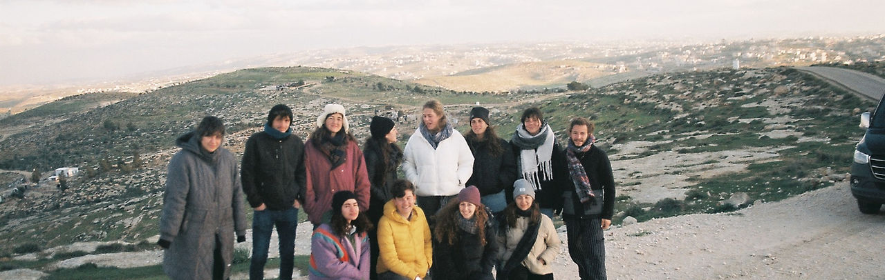

מי אנחנו - מדרשת דרור
בית המדרש ליהדות הומניסטית פוליטית
מהי מדרשת דרור?
מדרשת דרור קמה במטרה לפתח מנהיגות אזרחית צעירה שתפעל להעלאת מודעות וקידום פעילות בנושא הסכסוך הישראלי-פלסטיני, ולנסות לייצר מציאות שוויונית יותר בין הים לנהר.
החזון שלנו
יצירת אלטרנטיבה פוליטית לסכסוך הדמים המתמשך, המבוססת על ערכי סולידריות ושוויון אזרחי. פיתוח הנהגה בקרב צעירות וצעירים המוכנים להשמיע קול ביקורת, על אף המחיר החברתי, ופועלים להשפיע על מקבלי ההחלטות ועל הציבור הרחב בישראל.
אנו מאמינים כי לימוד מעמיק הוא המפתח לתיקון עולם. כפי שנאמר: "לא המדרש עיקר אלא המעשה" – הלימוד שלנו אינו מסתכם בידע תיאורטי, אלא מהווה כלי לשינוי תודעתי וחברתי. אנו שואפים לכונן חברה שבה ערכי החירות, השוויון וכבוד האדם הם התשתית לחיים המשותפים בארץ.
ארבעת עמודי האמונה של המדרשה
בעולם הדתי, לימוד תורה הוא דרך לעצב מצפון, להעמיק במוסר וללמוד אחריות כלפי אדם ומקום.
במדרשת דרור לומדים על הסכסוך כדי להבין את המציאות, מתוך הנחה שאי אפשר לתקן אם לא מכירים את השבר לעומקו.
הבורות היא החטא, והידיעה היא תחילת התשובה.
1. בקיאות שליטה בעובדות כחובה מוסרית
כמו תלמיד חכם שחייב לשלוט בפרטי ההלכה, כך עלינו לשלוט בפרטי המציאות. אי אפשר להגן על זכויות אדם על בסיס סיסמאות בלבד.
האימון: "גריסה" של עובדות. לומדים את המפות, את ההיסטוריה, את המעמד המשפטי, הסוציולוגיה והפסיכולוגיה, ואת ההסכמים והכישלונות, בלי הנחות.
המשמעות הרוחנית: זוהי מלחמה בבורות ובעצימת העיניים. אנחנו מתאמנים בלהביט למציאות בצורה נכוחה, גם כשהפרטים לא נעימים, משעממים או כואבים, כי האלטרנטיבה היא התעלמות רעילה.
2. "אלו ואלו" אחיזת המורכבות
האימון הקשה ביותר הוא היכולת להחזיק שני נרטיבים סותרים ("מחלוקת") מבלי שאחד יבטל את השני.
האימון: לומדים את הסיפור הציוני ואת הסיפור הפלסטיני זה לצד זה. קוראים טקסטים מכוננים של שני הצדדים. מתרגלים את היכולת להבין את הכאב, הפחד והצדק של ה"אחר", בלי לוותר על הזהות העצמית.
המשמעות הרוחנית: הרחבת הלב. אנחנו מתאמנים בלהפוך את הנפש שלנו לכלי קיבול רחב מספיק כדי להכיל את הטרגדיה הכפולה של הארץ הזו, מבלי לקרוס ומבלי להפוך לפנאטים.
3. עדות ירידה לשטח
לימוד הסכסוך לא יכול להישאר בבית המדרש (בכיתה). יש מצווה של "ראייה".
האימון: סיורים לימודיים בנקודות החיכוך, במחסומים, בשטחים הכבושים, בכפרים הלא-מוכרים וביישובי העוטף. המטרה היא לא "טיול", אלא עמידה מול הסבל והעוול.
המשמעות הרוחנית: להפוך את הידע לחוויה קיומית. כשאדם רואה עוול במו עיניו, הוא הופך ל"עד", ומעמד העד מחייב אותו לפעולה. זהו רגע של התעוררות מצפונית.
4. לימוד השפה מפתח ללב
שפה היא לא רק מילים, היא תרבות ונשמה. שפה היא מפתח ללב.
האימון: לימוד ערבית מדוברת (או הכרת מושגי יסוד תרבותיים).
המשמעות הרוחנית: הסרת המחיצות. כשאנחנו לומדים את שפתו של מי שנחשב "אויב" או "זר", אנחנו מכירים בצלם האלוהים שבו. זהו אקט של כבוד בסיסי, הושטת יד והסרת חומות של זרות. למידת השפה היא אקט פוליטי של יצירת שותפות אמיתית וחיבור עמוק למקום.
למה חשוב "לתרגל" הומניזם?
הכנעת האדישות
הומניזם דורש מאמץ אקטיבי להתנגד להרגל של התעלמות מסבלו של האחר.
מתורה להלכה
הפיכת התיאוריה למעשה יומיומי ופרוגרסיבי בשטח.
בניית קהילה
יצירת רשת ביטחון אנושית המאפשרת עמידה איתנה אל מול אתגרי השעה.
מקצועיות
לימוד והדרכה ברמה הגבוהה ביותר, מתוך אחריות לדיוק ולעומק.
בואו להיות חלק מהשינוי
הצטרפו אלינו לסמינר הבא או תמכו בפעילות המדרשה כדי שנוכל להמשיך ולהרחיב את מעגלי ההשפעה.